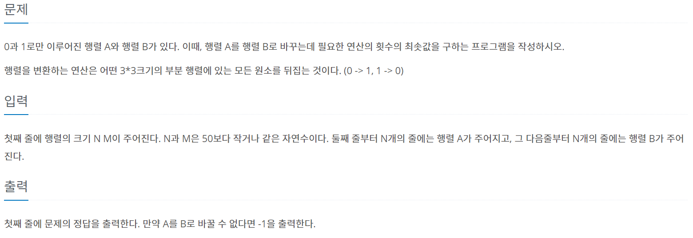
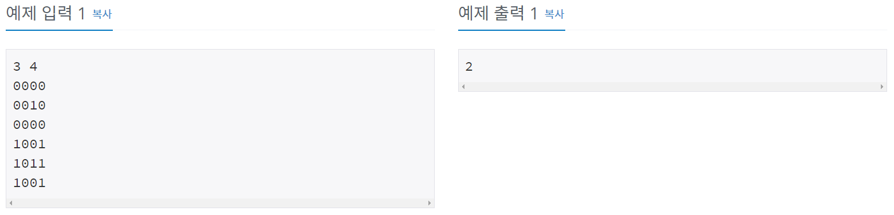
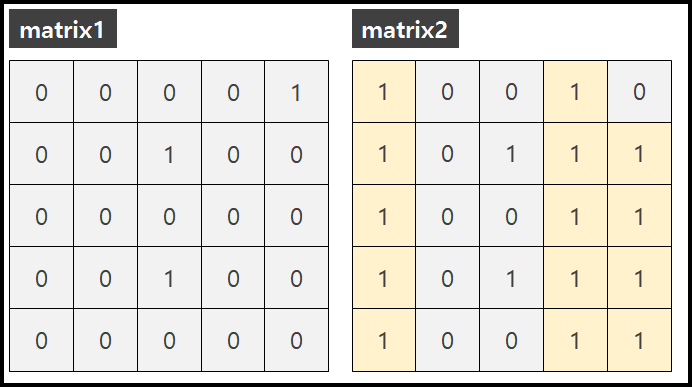
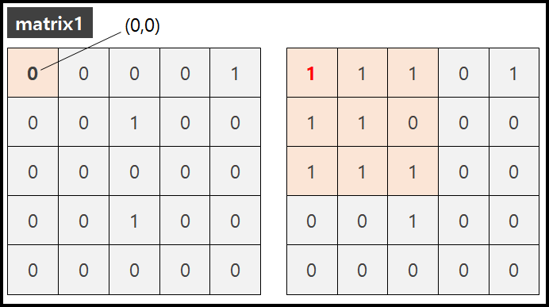
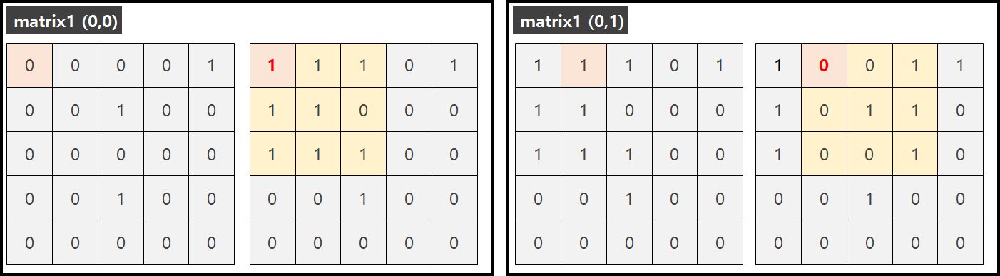
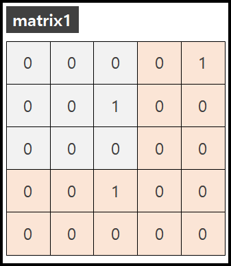
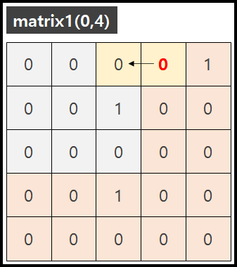
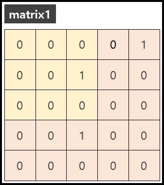
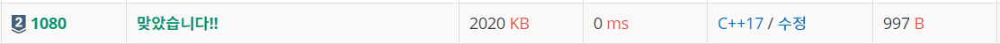

#문제정보
 
#문제분석
#목표
BOJ 1080 "행렬"문제는 matrix1을 matrix2와 똑같이 바꾸는데 필요한 "연산"횟수의 최솟값을 구하는 문제이다.
만약 아무리 연산을 수행해도 바꿀 수 없는 구조라면 "-1"을 출력한다.

#연산이란?
문제에서 설명하는 연산이란 matrix1의 (0,0) 번째 에서 연산 (3*3)을 수행한다고 가정하면 다음 그림과 같이 (0,0)을 기준으로 3*3 칸의 수들이 0은 1로 1은 0으로 변하는 것을 의미한다.

#선택한 박스의 수만 신경쓰자!
그런데, 선택한 박스 (0,0)를 제외한 나머지 노란색 박스의 수들이 변하는것은 사실 크게 신경쓰지 않아도 된다. 왜냐하면 어차피 노란색 박스 차례가 왔을때 언제든지 다시 원래의 수로 되돌릴 수 있기 때문이다. 그래서 좌측 상단에서 우측 상단으로 내려가며 차례로, matrix1 과 matrix2 를 비교해 다른 수가 있다면 연산을 수행하여 수를 맞춰주면 된다.

#연산이 불가능한 박스
그런데, matrix1에서 연산이 불가능한 박스들이 있다. 아래에 붉은색으로 칠한 부분은 연산이 불가능하다. 정확히 말하면 해봤자 의미가없다.

그 이유는 간단하다. 예를 들어 (0,4) 위치에서 연산을 수행했다고 가정해보자. 그러면 (0,4)의 박스는 (0,3)의 박스에 영향을 미치게 된다. 그러면 기껏 (0,3)에서 수행했던 연산이 없었던 것이 되어 버린다.

#결론
그래서 우리는 노란색 친 부분까지만 연산을 수행해 주면된다. 만약 노란색 박스의 연산을 모두 수행 하였는데도 matrix1과 matrix2가 같아지지 않는다면, 아무리 연산을 수행해도 같아질수가 없는 구조이기에 -1을 출력하면 된다.

#소스코드
#include <iostream>
#define MAX 50
using namespace std;
int N,M,count;
char matrix1[MAX][MAX];
char matrix2[MAX][MAX];
void reverse(int x, int y)
{
for (int i = x ; i < x + 3 ; ++i)
{
for (int j = y ; j < y + 3 ; ++j)
{
if (matrix1[i][j] == '1')
{
matrix1[i][j] = '0';
}
else
{
matrix1[i][j] = '1';
}
}
}
}
int main()
{
ios::sync_with_stdio(false); cin.tie(0);
cin >> N >> M;
for (int i = 0 ; i < N ; ++i)
for (int j = 0 ; j < M ; ++j)
cin >> matrix1[i][j];
for (int i = 0 ; i < N ; ++i)
for (int j = 0 ; j < M ; ++j)
cin >> matrix2[i][j];
for (int i = 0 ; i < N - 2 ; ++i)
{
for (int j = 0 ; j < M - 2 ; ++j)
{
if (matrix1[i][j] != matrix2[i][j])
{
reverse(i,j);
count++;
}
}
}
bool flag = false;
for (int i = 0 ; i < N ; ++i)
{
for (int j = 0 ; j < M ; ++j)
{
if (matrix1[i][j] != matrix2[i][j])
flag = true;
}
}
if (flag) cout << -1;
else cout << count;
return 0;
}